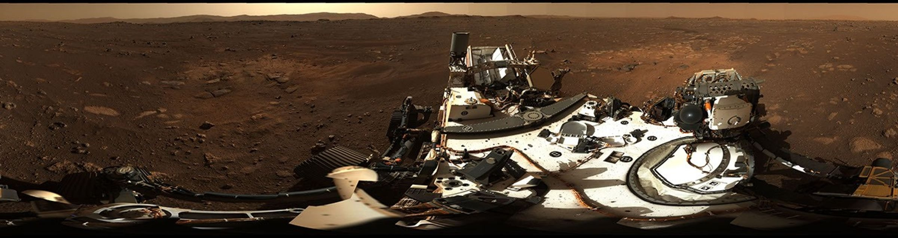

FIELD VISIT / 001
Mars
A little closer.
An open horizon. A world of quiet details. Take a few steps on the red planet.
80 × 80 m to explore

FIELD VISIT / 001
An open horizon. A world of quiet details. Take a few steps on the red planet.
80 × 80 m to explore
